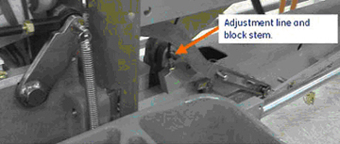
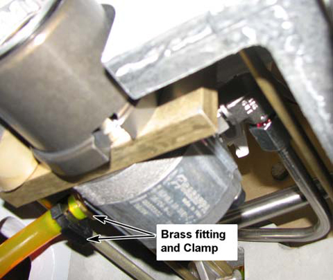
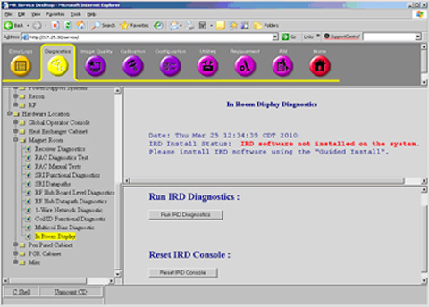

GE Exclusive Use Only
Direction 5670006, Rev# 1
Discovery MR750w GEM Service Methods
Module Version 6.0, Version Date 4/29/11
GE Exclusive Use Only |
This document describes various conditions for patient handling subsystems and possible solutions to those conditions. It contains the following sections:
Section 2.1.1, Tabletop Will Not Lock in Back Position
Section 2.1.2, Handle Too Low for Technician to Use
Section 2.2, Cradle Moves Back Farther than Designed
Section 3.1, Cannot Release Caster Lock
Section 3.2, Table Dock Hook Not Retracting Upward When Table Undocked
Section 3.3.1, Table Travels Down Completely with One Push
Section 3.3.2, Up and Down Mechanisms Bind When Table Docked
Section 4.1, LPCA Does Not Sense Lower Table or Move to Start Position
Section 4.2, LPCA LEDs Not Working
Section 4.3, In-Room Display Indicates No Home
Section 4.4, Clutch Slips
Section 4.5, Carriage Hook Does Not Detach from Cradle When Table Undocked
Section 4.6, Cradle Position Lost When Advanced to Scan
Section 5.1, Rotary Pump Fails to Drive Table Up
Section 5.2, Unable to Align Dock
Section 6, Magnet Keypad and IRD Troubleshooting
Section 7, PAC Troubleshooting
Section 8, PHPS Troubleshooting
Section 9, Intercom Troubleshooting
Section 10, Bridge Troubleshooting
There are two scenarios: Either the table will not lock all the way, or the table is locked into position and will not lower or undock, forcing the technician to use the Emergency Release to undock.
Illustration 1: Table Not Locked

Cause:
Worn edge on the locking mechanism as shown in illustration below.
Locking mechanism was not designed for the table to be moved using the emergency handle. This could eventually damage the latching system.
Illustration 2: Worn Edge

Solution:
Replace the worn components, and instruct users not to use the Emergency handle to move the table. Refer to Cradle Guide Rail Replacement.
Cause:
Technicians are using the Emergency Release to push the table, especially when the table is in the lower position. This causes the rail guides to become misaligned; result is the table will not lock in position.
Illustration 3: Emergency Release as Handle

Solution:
Operator should use the handle as shown below.
Illustration 4: Proper Use of Handle

Illustration 5: Cradle Too Far Back

Cause:
Guide strips are misaligned or not pushed down far enough.
Illustration 6: Misaligned Rails

Solution:
Replace the defective guide rails as required according to Cradle Guide Rail Replacement.
The wheel is locked in the forward position and will not release.
Cause:
One or both hooks are bent. Refer to both illustrations below.
Illustration 7: Hook Locations

Illustration 8: Normal and Bent Hooks

Solution:
If a hook is bent, replace it. Refer to Braking System Replacements.
Cause:
Table will not undock so the Emergency Release needs to be used. The result is misadjustment of the internal mechanism.
(For 32 Channel Only) Obstruction is not allowing electrical dock connector to move all the way back.
Illustration 9: Dock Connector

Solution:
Remove the front cowling on the patient table to expose the 32-channel connector in the table.
Verify that cables or tie wraps are not obstructing travel of the connector sled to the rear. When the table is undocked, the sled must travel to the full rear position. Redress any obstructing cables.
Verify that the zipper from the bellows or the cables is not getting caught behind the plastic slide or on the links or covers.
Check the cradle release adjustment mechanism in the lower table frame, and make sure the adjustment line exits parallel to the block stem. (Too much tension can cause binding of the hook.)
Check the adjustment line and make sure it is not too tight. It should exit the block adjustment stem as shown below. If the line is exiting the block adjustment stem at a sharper angle, the dock hook may not retract properly. Readjust the stem and nut so that the line of travel looks similar to the illustration below. Refer to Cradle Release Block Adjustment.
Illustration 10: Cradle Release Adjustment Mechanism

Table will not rise because the actuator on the front of the table is stuck.
Illustration 11: Stuck Actuator

Cause:
Hydraulic line presses against the control rod causing the button to jam in the down position.
Illustration 12: Line Against Control Rod

Solution:
Attempt to move the hydraulic line out of the way of the control rod. (This should have been corrected with installation of FMI 60769.)
Table continues to go down after the pedal is released, or not able to move the table up when docked.
Up and down mechanisms that penetrate the front casting inside the table work when the table is undocked, but bind after the table is docked, or
Patient table elevates slowly from the dock motor or will not elevate from the dock motor, but works correctly when manually elevated using the patient table pedal.
Cause:
Problem with the motor assembly
Misalignment of the table
Solution:
When viewing the dock motor from the front of the dock, confirm that the motor rotates in a clockwise direction. If it does not, swap the motor leads inside the dock to reverse the rotation, and submit a complaint for this issue. Refer to Dock Adjustments.
| NOTE: | Misalignment may cause table pump to malfunction during operation and not properly pressurize fluid. |
Technician raises the table and does not realize that the Low Profile Carriage Assembly (LPCA) is out of position.
Illustration 13: LPCA Out of Position

Cause:
Home switch in the front not operating correctly
Dock hook tension not set correctly
Cradle latch not disengaging correctly
Table not properly aligned
Home flag error
Pressing the two actuators (shown below) will cause the LPCA to move to the home position to connect to the cradle if the longitudinal drive is operating correctly.
Illustration 14: Location of Two Actuators

Solution:
Ensure that the dock hook tension is properly set. Too loose a setting could contribute to the problem. If no other motion issue exists, make sure the table up limit is coming out far enough.
| NOTE: | When the tables goes up and down, an audible click should be heard when the switch in the dock is actuated. If the up limit cable is not tensioned properly, it may not be lifting the bell crank up high enough. |
Check the cable for proper operation.
Check the table alignment to the dock.
Cause:
The polarity of the LED is incorrect.
Solution:
Open the LPCA and confirm the polarity of the LED. Reposition the LED in its receptacle if incorrect.
This problem occurs even though the cradle is approximately 12 inches from the end of travel. To reset it, the table must be driven to Home.
Cause:
When driving the table into the bore:
Position display changes from about 2380 to No Home.
or
IRD indicates No Home.
Cause:
The Scan Room size selection in the Guided Install was set too short. (Does not apply to MR450w.)
Solution:
Confirm that the plastic End-of-Travel (EOT) ramp is attached to the proper location on the bridge. (Refer to the applicable System Installation manual for this procedure.)
| NOTE: | The ramp is affixed at the end of the bridge for a long room configuration, and three-quarters from the end of the bridge for a short room configuration. |
From the Global Operator Console (GOC), select Guided Install > Hardware, and set the Scan Range (micro-meter) selection to the appropriate setting.
System reports an error that indicates the clutch slip was greater than expected or the carriage sometimes slips and will not drive all the way to the home position.
Cause:
Obstacles in the longitudinal direction
Misaligned belt or clutch
Solution:
| NOTE: | The clutch is not adjustable in the field. |
Verify that the system is aligned correctly.
Make sure the belt is tensioned properly. (Refer to Bridge and Longitudinal Drive Belt Replacement.)
Check the drive pulley on the front of the bridge and make sure it rotates freely.
Sometimes the carriage stops within 1/4 inch (6.4 mm) of end-of-travel, which is the Home position.
| NOTE: | If the [Home] button is used to drive the cradle home instead of the [Out Fast] button, this issue is experienced more often. When the [Home] button is pressed, the system slows carriage travel during its last 20 cm, so there is less inertia to help move the carriage through the last 1/4 inch of travel. |
Drive belt tension can affect long drive force from five to seven pounds. Making sure the belt is tensioned properly will help correct drive problems. If the carriage drive force is measured using a field force gauge, the force measurement should be observed midway between the two upper and lower scribe lines.
Confirm the LPCA has no binding over the distance of travel.
Cause:
Table height is misadjusted.
Hook size is too large or cradle receptor is incorrectly sized.
Front latch lock is not adjusted correctly.
Screw in front of LPCA is misadjusted.
Solution:
Check patient table alignment, leveling, and adjustment of the front carriage plunger and the egress switch position. (Refer to Tabletop Height Adjustment.
Verify that the hook fits easily into the receptor. If not, check for a burr and replace the receptor if necessary.
Perform the Cradle Release Pin Height Adjustment.
Screw in the actuator on the front of the LPCA one clockwise revolution. Make sure the adjuster still pushes the button on the front of the cradle enough to release the cradle side latch.
| NOTE: | The adjuster should not push the button to the point that it is pressing against the front of the cradle. This adjustment will take the uneven force off the cradle and he LPCA, and center the pressure on the cradle latch. |
Illustration 15: Cradle Components

After landmarking and pressing Advance to Scan, the cradle position is lost on the enclosure display. Error log displays Error 2268822.
Cradle did not start moving when requested.
Home switch may not be functioning.
Last stop position: -2445843 um
Current position: -2445843 um->
Cause:
Brass home plunger is stuck in the up position.
Solution:
Examine the brass home plunger located in front of the LPCA to make sure it is free of residue and able to move freely through the plastic hole in the LPCA. If residue is present, remove the plunger, clean it with rubbing alcohol and polish it.
Check the plastic hole in the LPCA for debris. If present, clean it using a towel dampened with water, if necessary, and dry thoroughly.
Grinding occurs when using the motor to raise or lower the table, or the rotary pump fails to drive table up.
Cause:
Alignment of the table height via the casters is not correct; bosses may be misaligned. (Illustration below shows bosses properly aligned.)
Illustration 16: Bosses Aligned

Failure in the dock motor circuit requires fault isolation.
Solution:
Table needs to be aligned to the dock.
Adjust the casters until the bosses are aligned.
Check the dock hook for proper tension, referring to Dock Adjustments. Also, refer to the Patient Handling Alignment Service Note, DOC0758504.
Fault in the dock motor circuit needs to be identified.
Use the [In-Fast] and [Out-Fast] buttons on the front enclosure to confirm that the proper cradle motion is supplied by the longitudinal drive motor (since the same PHPS power supply is shared by dock motor).
If cradle travel is normal, use the SRI Real-time Diagnostics under SRI Functional Diagnostics to confirm the state of the dock pedal UP Switch. Otherwise, the dock motor probably failed and will require replacement. Refer to Dock Motor Replacement.
If cradle travel is abnormal, check for proper cabling between the PHPS module and the dock. Use a Digital Multimeter to check for proper voltage between the test points for patient handling hardware (labeled TBL) on the front of the PHPS. (These test points should always show proper voltages regardless of patient handling activity.)
Cause:
Bridge not centered.
Dock floor bolt not properly installed.
Front bridge lower support bracket not properly aligned.
Solution:
Check table alignment per the installation manual and realign accordingly.
In Room Display (IRD) is dark or the trackball and buttons are not responding.
Cause:
IRD electronics are hung.
Cables are not detected or misconfigured.
Power supply failure occurred.
System requires a reset.
Solution:
Always boot applications using sdc from the login window. (Using any other login may result in the IRD software not loading.)
If the IRD is not functioning after the initial software load, make sure the IRD software is installed from Guided Install.
From the Common Service Desktop, proceed to [Diagnostics] and run In Room Display Diagnostics.
Illustration 17: In Room Display Diagnostics

Confirm the state of the software (installed/uninstalled).
Make sure both trackball assemblies are detected. (IRD video will not function if trackball assemblies are not detected.)
Check the cabling to the trackball assembly. If they are still not detected, select Reset IRD and make sure the trackball assemblies are detected and operational.
If the problem persists, attempt to reboot the Host PC.
If the IRD is still dark, use a flashlight to check the display, and confirm that the IRD backlight has not failed.
Check the Link Status and USB Status LEDs, located on the IRD module inside the GOC. Green LEDs mean the IRD is communicating, and the trackball assemblies are detected.
If the USB Status LED is not green, the USB signal is incorrect on the fiber-optic cable. Check the USB connections from the trackball assemblies to the IRD. From the GOC console, select Diagnostics > Hardware > Magnet Room > Reset IRD Console.
If the Link Status LED is red, trackball assemblies are not detected or the IRD is not communicating.
Ensure all of the cabling is properly connected between the In-Room Monitor (IRM) module and the IRD.
Check that the TX and RX fiber-optic cables from the IRM are not swapped.
Illustration 18: IRD Connections

Physiological Acquisition Controller (PAC) is not communicating.
| NOTE: | There are two versions of PAC units available: PAC-2B (pre Q2 of 2011) and PAC-5 (post Q2 of 2011). The PAC-5 unit has one-wire capability, but the PAC-2B unit does not. |
Cause:
This message indicates a communication failure or a failure with one or more of these devices: PAC, Controller Area Network Fiber-optic Board (CFB), SRF/TRF Interface Board (STIF) or Signal Processing Unit (SPU).
| ||||
| The Solutions below apply to both PAC-2B and PAC-5 units unless indicated otherwise. | ||||
Solution:
(For PAC-5 Only) Review the LEDs on the PAC unit according to the table below:
| LED | Reference Designation | LED Normal State | LED Faulty Condition | Purpose |
| Heart Beat | DS9 | Blinking | Not Illuminated | Checks health and power of PAC-5 |
| Application | DS4 | Illuminated | Not Illuminated | Checks application firmware is working |
Check the fiber-optic connections at the PAC.
Check for power to the PAC.
Run these diagnostics:
PAC Diagnostics Test
PAC Manual Tests
CFB Functional Diagnostics
FB Board Level Diagnostics
(For PAC-5 Only) One-Wire Diagnostics
| NOTE: | The PAC communicates to the CFB across the fiber-optic cable, then the CFB repeats the communications across the fiber-optic cable to the STIF inside the CAM chassis or Multi-Generational Data acquisition controller (MGD). While the PAC and STIF are not CAN devices, the CFB still facilitates their communication. The fiber-optic cable connections between the CFB and PAC and from the CFB to the STIF must be attached and functioning for the PAC to communicate cardiac, respiratory, and finger-probe gating information to the system. |
System reports Error 2274509. The CFB detected that the magnet power from the Patient Handling Power Supply (PHPS) is low.
Cause:
There is a known issue with how the CFB is monitoring this power. A poor cable connection to the PHPS or a failed PHPS may exist.
Solution:
Unless this message is accompanied by other error messages (at the same time) that refer to failures of the Scan Room Interface (SRI), PAC, One-Wire, IRD, or CFB, disregard this error as a nuisance error.
No audio is coming from the patient intercom.
Cause:
Cable or component failure.
Solution:
Check connections to the GOCAA module inside the (Global Operator Console) GOC. Refer to the applicable System Block Diagrams, Operator Workspace.
Disconnect J34 (speaker) at SRI-4 and see if audio at console starts working.
Disconnect J31 (rear microphone) at SRI-4 and see if audio at console starts working.
Disconnect J32 (front microphone) at SRI-4 and check that audio at console is working.
| NOTE: | If disconnecting one of the above restores operation of the remaining items, then inspect the disconnected item for a malfunction. |
Check connections at: GOCAA J7, Secondary Penetration Wall (SPW) J118, Magnet I/O Panel J1, and SRI-4 J33.
Table will not align with the bridge.
Cause:
Magnet or front bracket was not installed correctly.
Solution:
Check the position of the brackets mounted to the front of magnet. These brackets should be properly centered to permit correct alignment. (Refer to the system installation manual for the procedure.)